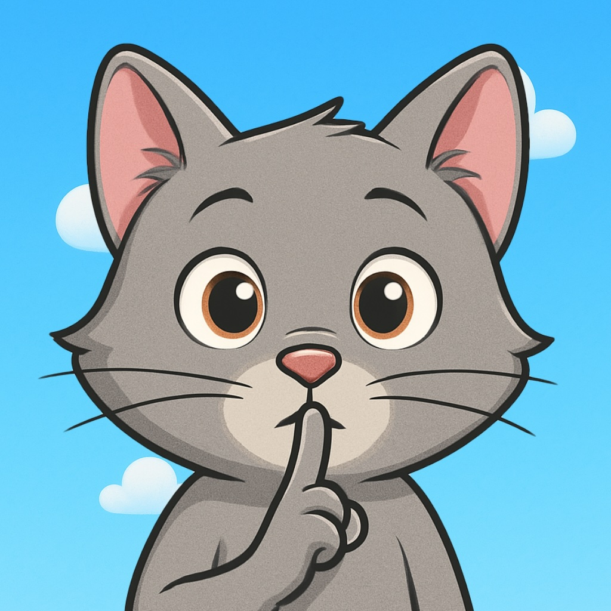

Bouncy Balls Alternative: A Free Classroom Noise Meter with Characters
Try the free online noise meter → Free, no sign-up — runs in the browser on Chromebook, Windows, Mac and iPad.
If you are looking for a different look than bouncing balls, Keep Quiet is a free alternative that works the same way — the microphone measures how loud the room is — but shows it differently: a friendly character changes its face and the scene behind it gets busier as the room gets louder.
What is Bouncy Balls?
Bouncy Balls is a free noise management tool at bouncyballs.org. Balls on the screen react to sound from the microphone. Its themes are Plastic, Emoji, Numbers, Bubbles and Eyeballs, and its settings include the microphone, the sensitivity, a setting called Total and a noise alert (no sound, a beep or a "shush").
What is different in Keep Quiet?
Keep Quiet shows the noise level as a story instead of physics. In the free online noise meter a cat reacts in 3 steps and covers its ears when the room gets loud, while the scene behind it moves from a park to a busy street to an airport, and a green-to-red dial or bar shows the level at a glance.
- Silent by design. There is no alarm sound. Loudness is shown only by the character, the scene and the dial or bar, which suits sensory-friendly rooms and tests.
- Quiet-time timer. Choose a preset from 1 to 30 minutes or your own length from 1 to 90 minutes. The timer counts only while the meter runs; at 0:00 the meter pauses itself and the timer turns red.
- Privacy. Audio never leaves your device — sound is analysed in the browser, nothing is recorded, stored or sent.
- More characters if you want them. The cat and the city scene are free. An optional one-time unlock adds 7 more characters and 4 more scenes; the free meter keeps working without it.
Bouncy Balls vs Keep Quiet at a glance
| Feature | Bouncy Balls | Keep Quiet (online) |
|---|---|---|
| Price | Free | Free; optional one-time unlock |
| Runs in | The browser | The browser on Chromebook, Windows, Mac and iPad |
| What reacts | Balls that react to sound (5 themes) | A character and a scene, in 3 steps, plus a dial or bar |
| Noise alert | No sound, beep or shush | Visual only, no sound |
| Quiet-time timer | Not stated on its site | Yes, 1 to 90 minutes |
| Sign-up | Not stated on its site | None |
Bouncy Balls facts as shown on bouncyballs.org on November 20, 2026. Keep Quiet is not affiliated with Bouncy Balls.
Which one should you pick?
Pick Bouncy Balls if your class loves the bouncing effect or you want a sound alert when it gets too loud. Pick Keep Quiet if you prefer a calm, silent screen, a character younger children can relate to, or a quiet-time timer that pauses the meter when time is up. Both are free and open in the browser, so the quickest way to decide is to try each for one lesson.
Also as an app
Keep Quiet also exists as the Noise Meter – Keep Quiet app for iPhone, iPad and Mac: installed on your device and working offline, free to download with no ads.

Noise Meter – Keep Quiet
Free on iPhone, iPad & Mac, ad-free, and rated 4.8★ on the App Store.
Download free